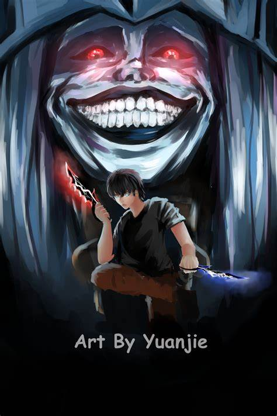
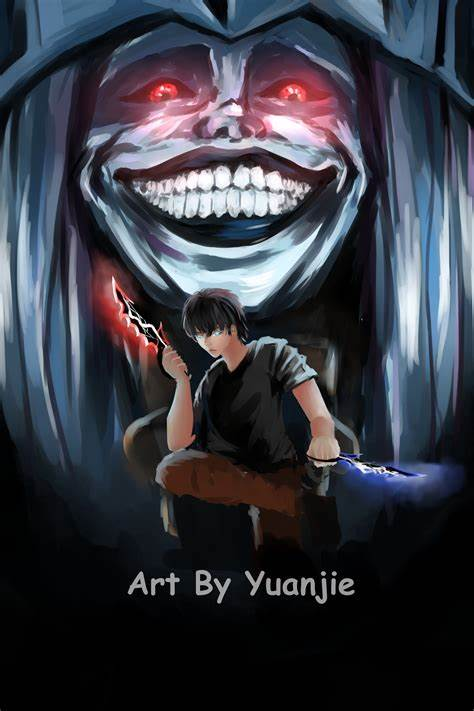

Summary
Ten years ago, "the Gate" appeared and connected the real world with the realm of magic and monsters. To combat these vile beasts, ordinary people received superhuman powers and became known as "Hunters." Twenty-year-old Sung Jinwoo is one such Hunter, but he is known as the "World's Weakest," owing to his patheticpower compared to even a measly E-Rank. Still, he hunts monsters tirelessly in low-rank Gates to pay for his mother's medical bills.
However, this miserable lifestyle changes when Jinwoo—believing himself to be the only one left to die in a mission gone terribly wrong—awakens in a hospital three days later to find a mysterious screen floating in front of him. This "Quest Log" demands that Jinwoo completes an unrealistic and intense training program, or face an appropriate penalty. Initially reluctant to comply because of the quest's rigor, Jinwoo soon finds that it may just transform him into one of the world's most fearsome Hunters.
Episodes
- Episode 1: The Weakest Hunter
- Episode 2: The First Victory
- Episode 3: The Double Dungeon
- Episode 4: I've Gotta Get Stronger
- Episode 5: A Pretty Good Deal
- Episode 6: The Real Hunt Begins
- Episode 7: Let's See How Far I Can Go
- Episode 8: This is Frustrating
- Episode 9: You've Been Hiding Your Skills
- Episode 10: What Is This, a Picnic?
- Episode 11: A Knight Who Defends an Empty Throne?
- Episode 12: Arise
Fan Art
Here is some fan art created by the community:


 

Characters

Sung Jin Woo
Sung Jin Woo is the main protagonist of Solo Leveling. He starts as the "World's Weakest" Hunter, but his journey leads him to become one of the most powerful Hunters in the world. He possesses a unique ability that allows him to solo dungeons, earning him the nickname "The Solo Leveler."

Cha Hae-In
Cha Hae-In is a high-ranking Hunter and a member of the Hunter's Association. She is known for her beauty and her powerful swordsmanship.She becomes involved with Sung Jin-Woo later in the series.

Goo Gwang-Cheol
Goo Gwang-Cheol is a high-ranking Hunter and the leader of the Kamish guild. He is known for his strength and his leadership skills. He becomes a mentor figure to Sung Jin-Woo later in the series.

Park Jin-Ah
Park Jin-Ah is a high-ranking Hunter and a member of the Hunter's Association. She is known for her intelligence and her strategic thinking. She becomes involved with Sung Jin-Woo later in the series.

Lee Hyeon-Seok
Lee Hyeon-Seok is a high-ranking Hunter and a member of the Hunter's Association. He is known for his strength and his combat skills. He becomes involved with Sung Jin-Woo later in the series.